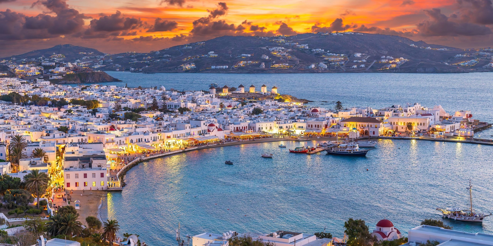

Προορισμοί που Αγαπήσαμε
Επιλέξαμε για εσάς τους αγαπημένους μας προορισμούς, καθένας με τη δική του ξεχωριστή γοητεία και ιστορία. Εξερευνήστε τους και σχεδιάστε το επόμενο ταξίδι σας!
Σαντορίνη
Η Σαντορίνη είναι ένα από τα πιο δημοφιλή νησιά της Ελλάδας, γνωστό για τη μοναδική του ομορφιά και το μαγευτικό του ηλιοβασίλεμα. Οι επισκέπτες εντυπωσιάζονται από τα λευκά σπίτια με τους μπλε τρούλους, χτισμένα στους βράχους της Καλντέρας. Το νησί προσφέρει εξαιρετικά τοπικά κρασιά, αρχαιολογικούς χώρους όπως το Ακρωτήρι, καθώς και εντυπωσιακές παραλίες με μαύρη, κόκκινη και λευκή άμμο. Είναι ιδανικός προορισμός για ζευγάρια, φωτογράφους και όσους αναζητούν ρομαντικές διακοπές με φόντο το Αιγαίο Πέλαγος.

Κρήτη
Η Κρήτη είναι το μεγαλύτερο και ένα από τα πιο πολυσχιδή νησιά της Ελλάδας. Διαθέτει μαγευτικές παραλίες όπως το Ελαφονήσι και ο Μπάλος, ορεινές διαδρομές όπως το Φαράγγι της Σαμαριάς και ιστορικά αξιοθέατα όπως το Παλάτι της Κνωσού. Η κρητική φιλοξενία είναι ξακουστή και συνοδεύεται από εκλεκτή τοπική κουζίνα και παραδοσιακή μουσική. Το νησί συνδυάζει πολιτισμό, φύση και παράδοση, καθιστώντας το κατάλληλο για κάθε τύπο ταξιδιώτη, από οικογένειες μέχρι λάτρεις της περιπέτειας και της ιστορίας.

Μύκονος
Η Μύκονος είναι το απόλυτο κοσμοπολίτικο νησί των Κυκλάδων, γνωστό για την έντονη νυχτερινή ζωή, τα πολυτελή καταλύματα και τη γραφική Χώρα με τα σοκάκια και τους ανεμόμυλους. Προσελκύει ταξιδιώτες από όλο τον κόσμο που αναζητούν διασκέδαση, μόδα και πολυτέλεια. Παράλληλα όμως προσφέρει και όμορφες παραλίες όπως ο Ορνός, η Ψαρού και η Ελιά, καθώς και κοντινές αποδράσεις στο νησί της Δήλου με τα σημαντικά αρχαιολογικά ευρήματα. Είναι ο ιδανικός προορισμός για όσους επιθυμούν κοσμικές αλλά και πολιτιστικές εμπειρίες.